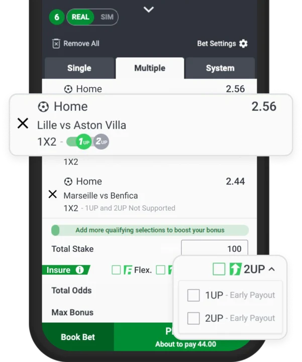

At SportyBet, not only do we offer the familiar 2UP feature, but now with the brand-new 1UP, you can enjoy an even quicker payout opportunity! Not just two goals ahead—1UP lets you win early with just a one-goal lead!
• 2UP : When your team leads by two goals (e.g. 2-0, 3-1), you get an early payout!
• 1UP : When your team leads by just one goal (e.g. 1-0, 2-1), you also get an early payout!
• Match abandoned with a one or two-goal lead? You still get paid!
• Note: You can only choose either 1UP or 2UP for the same match, allowing you to select the most suitable option based on the game situation and enjoy a quicker payout experience.
Option 1: Choose 1X2 Market
Tip: Easily toggle between 1UP and 2UP to switch the 1X2 market to early payout mode
Option 2: Directly select 1X2-1UP
or 1X2-2UP in Event Details
Option 3: Activate 1UP or 2UP mode in your betslip, tick the 1X2 option, and choose the
early payout feature you prefer

Place your bet and cheer for an early payout
Terms and Conditions
1. 1UP or 2UP will not apply where a bet has been fully cashed out. Where a bet has been partially cashed out and it qualifies for the 1UP or 2UP, the bet will be settled on the remaining active stake.
2. SportyBet reserves the right to exclude certain Customers from eligibility for this offer, or limit any specific Customer’s stakes, markets, and odds at its sole discretion; provided that if you have placed a qualifying bet in relation to this offer (if applicable), prior to being notified of the restrictions, such restrictions will not materially affect your ability to satisfy the eligibility conditions of this offer, or to benefit from this offer.
3. 1UP or 2UP were created in order to reward our most valued customers. If fraudulent activity or abuse is suspected, we reserve ourselves the right to remove Gifts and associated winnings from a given account or any associated accounts.